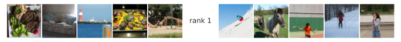

Install all required dependencies
# TODO uncomment before final packaging
# %pip install git+https://github.com/BonnerLab/ccn-tutorial.gitHere’s a link to this notebook on Google Colab.
# TODO uncomment before final packaging
# %pip install git+https://github.com/BonnerLab/ccn-tutorial.gitfrom pathlib import Path
import requests
import typing
import warnings
from loguru import logger
import numpy as np
import pandas as pd
import xarray as xr
import nibabel as nib
import nilearn.plotting
from PIL import Image
from sklearn.preprocessing import MinMaxScaler
from sklearn.decomposition import PCA, NMF
from umap import UMAP
from IPython.display import display, HTML
import matplotlib as mpl
from mpl_toolkits.axes_grid1 import ImageGrid
from matplotlib import pyplot as plt
from matplotlib_inline.backend_inline import set_matplotlib_formats
from matplotlib.offsetbox import OffsetImage, AnnotationBbox
import seaborn as sns
from utilities.brain import (
load_dataset,
average_data_across_repetitions,
load_stimuli,
plot_brain_map,
)%matplotlib inline
sns.set_theme(
context="notebook",
style="white",
palette="deep",
rc={"legend.edgecolor": "None"},
)
set_matplotlib_formats("svg")
pd.set_option("display.max_rows", 5)
pd.set_option("display.max_columns", 10)
pd.set_option("display.precision", 3)
pd.set_option("display.show_dimensions", False)
xr.set_options(display_max_rows=3, display_expand_data=False)
warnings.filterwarnings("ignore")random_state = 0
rng = np.random.default_rng(seed=random_state)
NSD is the largest fMRI dataset on human vision, with 7T fMRI responses (1.8mm isotropic voxels) obtained from 8 adult participants. The experiment involved a continuous recognition task while participants observed natural scene images from the Microsoft Common Objects in Context (COCO) database (Lin et al., 2014).
Let’s load the dataset. This data contains neural responses to 872 images from ~15,000 voxels reliably modulated by the visual stimuli during the NSD experiment.
data = average_data_across_repetitions(load_dataset(subject=0, roi="general"))
display(data)<xarray.DataArray 'fMRI betas' (presentation: 700, neuroid: 15724)>
0.4915 0.2473 0.08592 0.05828 -0.1315 ... -0.2126 -0.6315 -0.5751 -0.5354
Coordinates: (3/4)
x (neuroid) uint8 12 12 12 12 12 12 12 ... 71 72 72 72 72 72 72
y (neuroid) uint8 21 22 22 22 22 22 23 ... 34 29 29 30 30 30 31
... ...
stimulus_id (presentation) object 'image02950' ... 'image72948'
Dimensions without coordinates: presentation, neuroid
Attributes: (3/8)
resolution: 1pt8mm
preprocessing: fithrf_GLMdenoise_RR
... ...
postprocessing: averaged across first two repetitionsWe utilized the NSD single-trial betas, preprocessed in 1.8 mm volumetric space and denoised using the GLMdenoise technique (version 3;“betas_fithrf_GLMdenoise_RR”). The betas were converted to Z-scores within each scanning session and averaged across repetitions for each stimulus.
Here are some examples of stimuli that we analyzed.
def view_stimuli(stimuli: xr.DataArray, *, n: int = 10) -> None:
fig = plt.figure(figsize=(12, 4))
image_grid = ImageGrid(
fig=fig,
rect=(1, 1, 1),
nrows_ncols=(1, n),
share_all=True,
)
for i_image in range(n):
image_grid[i_image].imshow(stimuli[i_image])
image_grid[i_image].axis("off")
fig.show()
stimuli = load_stimuli()
view_stimuli(stimuli)Now we can apply PCA to the neural responses and plot the eigenspectrum of the data!
def view_eigenspectrum(pca: PCA, *, log: bool = False) -> None:
eigenvalues = pd.DataFrame(pca.explained_variance_, columns=["eigenvalue"]).assign(
rank=1 + np.arange(pca.n_components_)
)
fig, ax = plt.subplots(figsize=(6, 6))
sns.lineplot(
ax=ax,
data=eigenvalues.loc[eigenvalues["rank"] < pca.n_components_],
x="rank",
y="eigenvalue",
)
sns.despine(ax=ax)
if log:
ax.set_xscale("log")
ax.set_yscale("log")
ax.set_ylim(bottom=1)
fig.show()
pca = PCA()
pca.fit(data)
view_eigenspectrum(pca)
On this plot, the first few PCs have substantial variance while there appears to be negligible variance after about rank 20. How can we interpret these PCs of different variance levels? There are some simple ways to visualize these PCs.
def view_images_as_scatterplot(
x: np.ndarray, y: np.ndarray, *, stimuli: xr.DataArray
) -> None:
fig, ax = plt.subplots(figsize=(10, 10))
for i_stimulus in range(len(stimuli)):
image_box = OffsetImage(stimuli[i_stimulus].values, zoom=0.3)
image_box.image.axes = ax
ab = AnnotationBbox(
image_box,
xy=(x[i_stimulus], y[i_stimulus]),
xycoords="data",
frameon=False,
pad=0,
)
ax.add_artist(ab)
ax.set_xlim([x.min(), x.max()])
ax.set_ylim([y.min(), y.max()])
ax.axis("off")
fig.show()
def view_images_at_poles(
x: np.ndarray,
*,
stimuli: xr.DataArray,
n_images_per_pole: int = 5,
label: str | None = None,
) -> None:
indices = np.argsort(x, axis=0)
fig = plt.figure(figsize=(12, 4))
image_grid = ImageGrid(
fig=fig,
rect=(1, 1, 1),
nrows_ncols=(1, 2 * n_images_per_pole + 1),
share_all=True,
)
for i_image in range(n_images_per_pole):
image_grid[i_image].imshow(stimuli[indices[i_image]])
image_grid[i_image].axis("off")
image_grid[-i_image - 1].imshow(stimuli[indices[-i_image - 1]])
image_grid[-i_image - 1].axis("off")
for ax in image_grid:
ax.axis("off")
if label is not None:
ax = image_grid[n_images_per_pole]
ax.text(
0.5,
0.5,
label,
horizontalalignment="center",
verticalalignment="center",
transform=ax.transAxes,
)
fig.show()The first method is to plot the stimuli on a scatter plot, designating their X and Y coordinates to be their scores along two PCs of interest. This allows us to observe potential clustering of the stimuli.
data_pca = pca.transform(data)
view_images_as_scatterplot(data_pca[:, 0], data_pca[:, 1], stimuli=stimuli)
Alternativley, we can focus on the stimuli with the highest or lowest scores along a given PC. It provides simple clues of what this PC might be sensitive to, which could be features ranging from low to high complexity level.
for rank in [1, 2, 3, 10, 50, 100]:
view_images_at_poles(data_pca[:, rank - 1], stimuli=stimuli, label=f"rank {rank}")


Interpreting PCs can be challenging especially when we rely solely on visual inspection. This difficulty arises, in part, because many natural features are non-negative. As a result, methods like nonnegative matrix factorization (NMF) often offer more interpretable dimensions than PCA.
scaler = MinMaxScaler()
scaler.fit(data)
nmf = NMF(n_components=2, random_state=random_state)
data_nmf = nmf.fit_transform(scaler.transform(data))
view_images_as_scatterplot(data_nmf[:, 0], data_nmf[:, 1], stimuli=stimuli)
Similarly, we can inspect the stimuli with highest or closest-to-zero values along each dimension.
for dim in range(2):
view_images_at_poles(data_pca[:, dim], stimuli=stimuli, label=f"dim {dim+1}")
Nonetheless, PCA has unique benefits that shouldn’t be overlooked. For instance, PCA offers closed-form solutions and non-stochastic outcomes. They’re also well characterized mathematically. Moreover, because PCA is essentially rotateing data to present it in a clearer perspective, it is able to preserve all the original information.
Given these visualization, we might deem that the higher-rank PCs are non-interpretable and thus follow the common practice to drop them. However, before doing so, let’s try visualizing the spectrum on a logarithmic scale for both axes:
view_eigenspectrum(pca, log=True)On a log-log scale, the spectrum shows no obvious discontinuity! This suggests that the neural population code has a scale-free structure and its latent dimensionality is likely higher than 20!
What kind of structure is this? We observe that the spectrum is approximately linear on this log-log scale, suggesting that the eigenvalues obey a power law:
\log{\lambda_\text{rank}} \approx \alpha \log{\left( \text{rank} \right)} + c \implies \lambda_\text{rank} \propto \left( \text{rank} \right)^\alpha
A power law is a relationship of the form f(x) \propto x^{\alpha}, where \alpha is termed the index of the power law, or the power law exponent. It is scale-free because f(kx) \propto f(x).
Power laws are ubiquitious in nature, arising in all sorts of systems:
Nevertheless, a power law relationshop will not be observed when the data
Let’s compute the distribution of word frequencies in a small corpus – a collection of IMDb movie reviews!
from collections import Counter
import copy
from IPython.display import display, HTML
import numpy as np
import pandas as pd
from torchtext.datasets import IMDB
from torchtext.data.utils import get_tokenizer
import matplotlib as mpl
from matplotlib import pyplot as plt
import seaborn as sns
from wordcloud import WordCloud
dataset = IMDB(split="test")
tokenizer = get_tokenizer("basic_english", language="en")
unwanted_tokens = {".", ",", "?", "s", "t", "(", ")", "'", "!"}
counter = Counter()
for _, text in dataset:
counter.update(tokenizer(text))def view_word_frequency_distribution(
counter: Counter, *, log: bool = False
) -> mpl.figure.Figure:
fig, ax = plt.subplots()
sns.lineplot(
ax=ax,
data=pd.DataFrame(
{
"rank": 1 + np.arange(len(counter)),
"word frequency": sorted(counter.values())[::-1],
}
),
x="rank",
y="word frequency",
)
if log:
ax.set_xscale("log")
ax.set_yscale("log")
sns.despine(ax=ax, offset=20)
plt.close(fig)
return fig
view_word_frequency_distribution(counter)
view_word_frequency_distribution(counter, log=True)display_counter = copy.copy(counter)
for token in unwanted_tokens:
del display_counter[token]
cloud = WordCloud(background_color="white", width=600, height=300)
display(
HTML(
cloud.generate_from_frequencies(dict(display_counter.most_common(200))).to_svg(
embed_font=True
)
)
)display(
HTML(
cloud.generate_from_frequencies(
dict(display_counter.most_common()[-200:])
).to_svg(embed_font=True)
)
)for _, line in dataset:
tokens = tokenizer(line)
break
def postprocess(text: str):
new_text = ""
for i_char, char in enumerate(text):
if i_char != 0:
prev_char = text[i_char - 1]
else:
prev_char = None
if i_char > 1:
prev2_char = text[i_char - 2]
else:
prev2_char = None
if i_char != len(text) - 1:
next_char = text[i_char + 1]
else:
next_char = None
if char == "i" and prev_char == " " and next_char == " ":
new_text += "I"
elif char == " " and (
next_char == "."
or next_char == ","
or next_char == "'"
or prev_char == "'"
or prev_char == "("
or next_char == ")"
or next_char == "!"
):
continue
elif prev_char == " " and (prev2_char == "." or prev2_char == "!"):
new_text += char.upper()
else:
new_text += char
return new_text
print("An IMDb review")
display(HTML(f"<blockquote>{postprocess(' '.join(tokens))}</blockquote>"))An IMDb reviewi love sci-fi and am willing to put up with a lot. Sci-fi movies/tv are usually underfunded, under-appreciated and misunderstood. I tried to like this, I really did, but it is to good tv sci-fi as babylon 5 is to star trek (the original). Silly prosthetics, cheap cardboard sets, stilted dialogues, cg that doesn't match the background, and painfully one-dimensional characters cannot be overcome with a'sci-fi'setting. (I'm sure there are those of you out there who think babylon 5 is good sci-fi tv. It's not. It's clichéd and uninspiring.) while us viewers might like emotion and character development, sci-fi is a genre that does not take itself seriously (cf. Star trek). It may treat important issues, yet not as a serious philosophy. It's really difficult to care about the characters here as they are not simply foolish, just missing a spark of life. Their actions and reactions are wooden and predictable, often painful to watch. The makers of earth know it's rubbish as they have to always say gene roddenberry's earth... Otherwise people would not continue watching. Roddenberry's ashes must be turning in their orbit as this dull, cheap, poorly edited (watching it without advert breaks really brings this home) trudging trabant of a show lumbers into space. Spoiler. So, kill off a main character. And then bring him back as another actor. Jeeez! Dallas all over again.
print("Review reconstructed using top 200 words")
display(
HTML(
(
"<blockquote>"
+ postprocess(
" ".join(
[
token
for token in tokens
if token in [word for word, _ in counter.most_common(200)]
]
)
)
+ "</blockquote>"
)
)
)Review reconstructed using top 200 wordsi love and to up with a lot. Are, and. I to like this, I really did, but it is to good as is to (the).,,, that doesn't the, and characters be with a''. (I'm there are those of you out there who think is good. It's not. It's and.) while us like and character, is a that does not take (.). It, not as a. It's really to about the characters here as they are not, just a of life. Their and are and, to watch. The of know it's as they have to say's... People would not watching.'s be in their as this,, (watching it really this) of a show into.. So, off a character. And then him back as another.! All over again.
TODO emphasize “long-tailedness”/“heavy-tailedness” of distribution